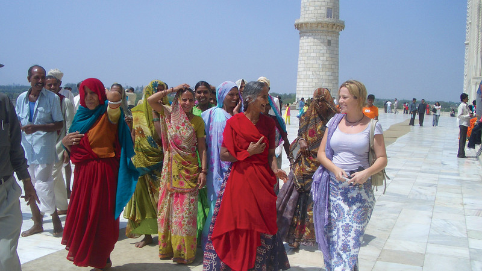

Is there a sight more iconic, more beautiful, more jaw-droppingly spectacular than the Taj Mahal?
Quite honestly, we can’t think of one.
At the very least, there’s no mausoleum more grand, no declaration of love more apparent than
building a marble masterpiece for one’s favorite wife… And no better reason to travel than seeing
its magnificence up close.
After all, this is art. Built in Agra, India between 1631 and 1648, it’s also history. And, of course, it’s
the perfect opportunity to take some otherworldly photos. So, to help visitors prepare for their Taj
Mahal travels, we’ve prepared a little guide, enlisting the help of some Intrepid experts – from
Destination Managers to acclaimed trip leaders – to cover all the bases.
Before you arrive at the Taj Mahal
That old saying ‘patience is a virtue’ really comes into its own when discussing the Taj Mahal.
Be prepared to be surrounded by hundreds (if not thousands) of people. These include Indian
men, women and children who may ask to take photos with you.
To prepare with the help of other travelers and a local tour guide, consider taking a group tour.
Intrepid have Taj-visiting trips that range from 8-day Golden Triangle tours (now with solo-only
departures!) to 15-day trips dedicated to food, to 19-day trips combining the highlights of India
and Nepal.
If you’re more pressed for time, you can check out the Taj Mahal on a whirlwind day tour from
Delhi. Check out Urban Adventures to see the itinerary that we’d recommend for this. And while
you’re at it, check out their day trips in Delhi, Jaipur, Varanasi and Mumbai!

The entrance queue can be pretty long during peak season but as long as you’re mentally
prepared, you’ll be fine. What’s to come is more than worth the wait…
What to bring to the Taj Mahal
Always leave your valuables in the hotel. There are lockers available at the Taj but it’s best to have
minimal belongings on you so you don’t spend too much time checking in.
You really only need to bring the following in one small bag:
- Passport
- Money
- Water
- Medicine
- Camera
- Phone
What to wear to the Taj Mahal
There is no dress code but you should still be respectful. If you want to enter the mosque, you will
need to cover your head, shoulders and knees.
It gets hot in Agra and there is very little shade, so wear light clothing and make sure you wear
sunscreen. Then again, Agra also gets very cold in winter (Nov-Feb) so layers are your friend too.
If you visit with Intrepid, you’ll be taken there earlier in the day or later in the afternoon to avoid
the worst of the heat.

Useful tip from Ryan Turner, Intrepid’s Destination Manager for India:
Other things you need to know
No food is allowed inside.
Cigarettes and lighters are also not allowed.
Tripods and additional lighting equipment need prior permission to be brought with.
Photography inside the mausoleum is prohibited. Most electronics (except cameras and small
video cameras) are not allowed.